A Malleable Agent Harness
Published on Sunday, September 7, 2025 - 8:10 PM CDT
I've been developing an experimental agent harness. Its a little sloppy, its not particularly revolutionary from a TUI perspective, but from an agent-harness-developer experience perspective I think its something special.
A short list of features:
- Mutable conversation histories managed with a forking generation system.
- Run-time editable system prompt, tools, MCPs, model selection.
- Cost per message and per session tracking.
Okay okay a very short list. But what it lacks in superfluous features it makes up with the intuition an agent-harness developer can acquire. What is the cost of my tool? Does the AI use my tool? Which models use or don't use my tool? Does my tool work well? In what way? Are my tool instructions well crafted? Are my prompts well crafted? What if I constructed my prompts differently? What if I could get the AI to respond in a certain way? How would that impact the rest of the conversation?
A lot of these questions I didn't know to ask until I started using this harness. Slight changes in language or in a tool interface can make a big difference in how the model uses a tool and if that tool is successful or not.
Models are much more deterministic than people give them credit for. While testing, slight changes in my prompt wording would have a dramatic impact on the model's behavior even though these three, four, five word changes were immaterial relative to the total words sent. Once the model knew how to use a tool it would use it.
I've recorded myself interacting with the agent-harness. You can view it below.

Some technical details for the interested few. The conversation histories are stored in HAMTs. These are immutable key, value collections. They use structural sharing which makes them fast and memory efficient (not that thats particularly important for this use case but you never know). When you fork a conversation (ctrl + s), the most recent HAMT is appended to the "generations" list. This is what enables the session switching behavior.
Editing prompts, tools, model outputs is all done with your system's editor. On the machine I recorded on this was nano but on my Macbook its neovim. This is way better than making people type into any half-baked input box I can slop out.
Which begs the question, why isn't this whole thing embedded into emacs or something? I'm not really an emacs or neovim guy but this sounds like a thing those programs would do. I'll probably explore there next.
And another thing I don't like (since we're on the subject), why are my tools defined in Python? Why can't I add a tool in the agent-harness interactively? Great question. Follow up. Why is it so hard to inform my AI model of the bash commands available on my machine? Why can't I add a tool called "foo" and have "foo" call the bash command "foo" with the arguments listed? Great questions. I'll work this all out eventually (its only been a week).
Or more likely never at all. Until I have a compelling reason to continue this project it will rot in obscurity (quite like myself now that I think of it). So if you like the idea, star the project or open a GitHub issue telling me you like it. It might provide the necessary motivation to carry on!